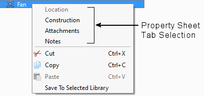

What are SmartParts and Primitives?
To save time
when building complicated structures, pre-built model macros (or
templates) of shapes and equipment, called SmartParts, are supplied which
are easily adapted to suit your model.
In addition, a set of simple 3D shapes (cuboids, prisms, tetrahedra (tets), and inverted tetrahedra), called primitives, that can be used to build more complex shapes, are provided.
SmartParts and primitives are added to the model from the New Object Palette.
SmartPart and primitive dimensions, locations, and thermal properties are defined in their property sheets, which are displayed below the data tree when a SmartPart or primitive is selected. For example, see Figure 1.
Figure 1. Fan Property Sheet Displayed
When a Fan is Selected

By default, the first tab of the property sheet is opened, however, you can open a tab directly by selection from the context-sensitive (right-click) menu, see Figure 2.
Figure 2. SmartPart Context-Sensitive Menu
